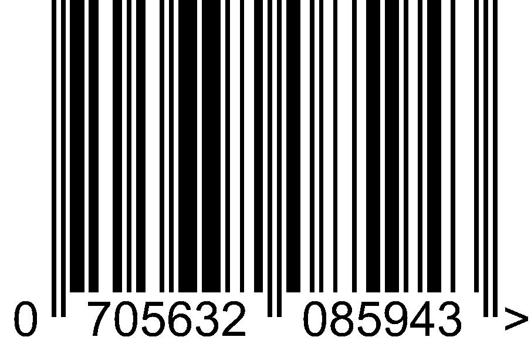

<video id="player" controls width="400" autoplay></video>
<button id="capture">Detect 1.</button>
<canvas id="snapshot" width="400" height="225"></canvas>
</img>
<button id="detect">Detect 2</button>
<pre id="result" ></pre>More details in Console
<script>
  var player = document.getElementById('player');
  var snapshotCanvas = document.getElementById('snapshot');
  var captureButton = document.getElementById('capture');
  var img = document.getElementById('img');
  var result = document.getElementById('result');
  var detectButton = document.getElementById('detect');
  
  // new global codeReader..
  let codeReader = new BarcodeDetector();
  var context = snapshotCanvas.getContext('2d');
  
  const writeStatus = function( node, txt ) {
  
  	node.appendChild( document.createTextNode( txt + ".." ) ); 
  }
  
  
	img.onload = function () {
	   //alert("image is loaded");
	   
	   result.innerHTML = "";
	   
      //  codeReader.detect( img ).then( codes => {
      codeReader.detect( img ).then( codes => {
      
      	  //result.innerHTML = "inside codeReader.detect.."
      	  writeStatus( result, "inside codeReader.detect..");
      
      	  if (!codes) {
      	  	writeStatus( result, "no codes..");
      	  	return;
      	  }
      	  
      	  writeStatus( result, "got codes..");
		  console.log(codes);
		  
		  //result.innerHTML = "inside codeReader.detect, got codes.."
		  //writeStatus( result, "inside codeReader.detect, got codes..")
		  
		  const txt = JSON.stringify( codes.map( x => x.rawValue), null, 2);
		  if (txt) writeStatus( result, "codes: " + txt);  //result.innerHTML = txt;
		  
		  const bbtxt = JSON.stringify( codes.map( x => x.boundingBox), null, 2);
		  if (bbtxt) writeStatus( result, "bb: " + bbtxt);  //result.innerHTML = txt;

		  const cptxt = JSON.stringify( codes.map( x => x.cornerPoints), null, 2);
		  if (cptxt) writeStatus( result, "bb: " + cptxt);  //result.innerHTML = txt;
		  
		  // cornerPoints: [ { x, y }, { x, y }, { x, y }, { x, y }, ]  
		  
		  
		  
		  codes.forEach( bcode => {  // .cornerPoints  // .boundingBox
			context.beginPath();
			context.lineWidth = "4";
			context.strokeStyle = "green";
			context.rect( bcode.boundingBox.left, bcode.boundingBox.top, bcode.boundingBox.width, bcode.boundingBox.height);
			context.stroke();
		  })
		  
		  codes.forEach( bcode => {  // .cornerPoints  // .boundingBox
			context.beginPath();
			context.lineWidth = "3";
			context.strokeStyle = "yellow";
			ctx.moveTo(bcode.cornerPoints[0].x, bcode.cornerPoints[0].y);
			ctx.lineTo(bcode.cornerPoints[1].x, bcode.cornerPoints[1].y);
			ctx.lineTo(bcode.cornerPoints[2].x, bcode.cornerPoints[2].y);
			ctx.lineTo(bcode.cornerPoints[3].x, bcode.cornerPoints[3].y);
			ctx.lineTo(bcode.cornerPoints[0].x, bcode.cornerPoints[0].y);
			context.stroke();
		  })
		  
		 
		  
      })
	}
  


  

  if (window.BarcodeDetector == null) {
    alert('BarcodeDetector is not defined!')
  }

  const streamToVideoPlayer = function(stream) {
    // Attach the video stream to the video element and autoplay.
    player.srcObject = stream;
  };
  
 
  captureButton.addEventListener('click', function() {
    //var context = snapshotCanvas.getContext('2d');
    
    //result.innerHTML = "testing.."
    writeStatus( result, "captureButton pressed ");

    
    if (window.BarcodeDetector == null) {
    	alert('No BarcodeDetector present, stopping..');
    	return
    }
    

    
    
    // Draw the video frame to the canvas.
    context.drawImage(player, 0, 0, snapshotCanvas.width, snapshotCanvas.height);
    
    writeStatus( result, "captureButton before snapshotCanvas.toBlob.. ");

    snapshotCanvas.toBlob( blob => {
      img.src = window.URL.createObjectURL( blob );
      
    })
    
    

  });
  


  detectButton.addEventListener('click', () => {
    if (window.BarcodeDetector == null) {
      alert('BarcodeDetector is not defined!')
    }

    //let codeReader = new BarcodeDetector()
    codeReader.detect(img).then( codes => {
      console.log(codes)
      result.innerHTML = JSON.stringify( codes.map( x => x.rawValue), null, 2)
    })
  })
  
  
  // more on getUserMedia: https://developer.mozilla.org/en-US/docs/Web/API/MediaDevices/getUserMedia

  navigator.mediaDevices.getUserMedia( {video: { facingMode: "environment" }} )  // was video: true
      .then( streamToVideoPlayer );
      
      /*
      // turning off video not working yet..
  detectButton.addEventListener('click', () => {
  
    navigator.mediaDevices.getUserMedia( {video: { facingMode: "environment" }} )  // was video: true
      .then( streamToVideoPlayer );
      
      
	stream.getTracks().forEach(function(track) {
	  track.stop();
	});
	*/
	
/*
barcodeDetector
  .detect(imageEl)
  .then((barcodes) => {
    barcodes.forEach((barcode) => console.log(barcode.rawValue));
  })
  .catch((err) => {
    console.log(err);
  });
  
  ////
  
  // check compatibility
	if (!("BarcodeDetector" in window)) {
	  console.log("Barcode Detector is not supported by this browser.");
	} else {
	  console.log("Barcode Detector supported!");

	  // create new detector
	  const barcodeDetector = new BarcodeDetector({
		formats: ["code_39", "codabar", "ean_13"],
	  });
	}

*/

/*

barcodeDetector
  .detect(imageEl)
  .then((barcodes) => {
    barcodes.forEach((barcode) => console.log(barcode.rawValue));
  })
  .catch((err) => {
    console.log(err);
  });
  
  
  
  // python example: https://stackoverflow.com/questions/50497945/how-to-reliably-detect-a-barcodes-4-corners
*/


/*

navigator.mediaDevices.getUserMedia({audio:true,video:true})
    .then(stream => {
        window.localStream = stream;
    })
    .catch( (err) =>{
        console.log(err);
    });
// later you can do below
// stop both video and audio
localStream.getTracks().forEach( (track) => {
track.stop();
});
// stop only audio
localStream.getAudioTracks()[0].stop();
// stop only video
localStream.getVideoTracks()[0].stop();

*/
      
     
</script>
